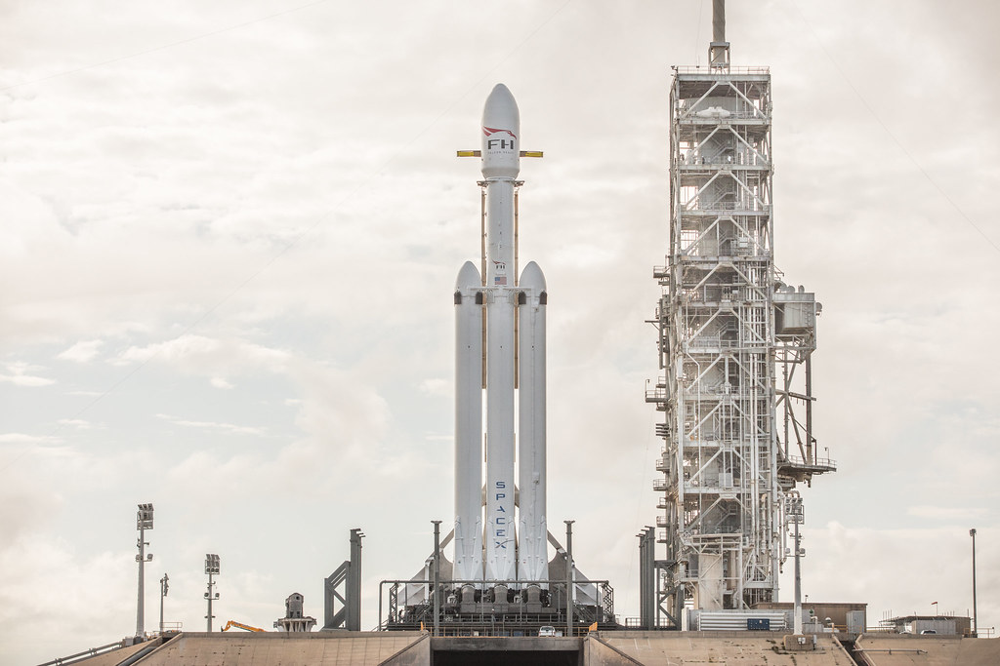
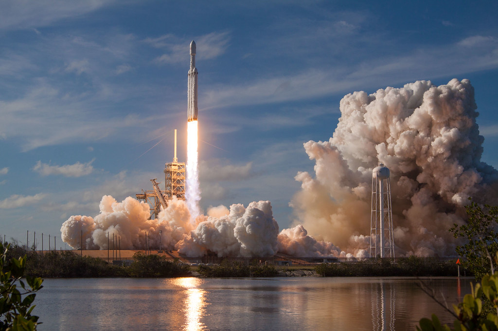
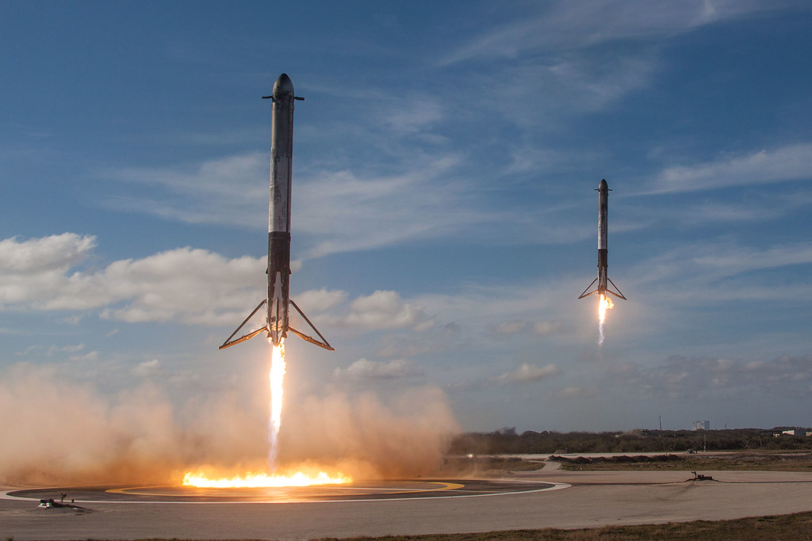
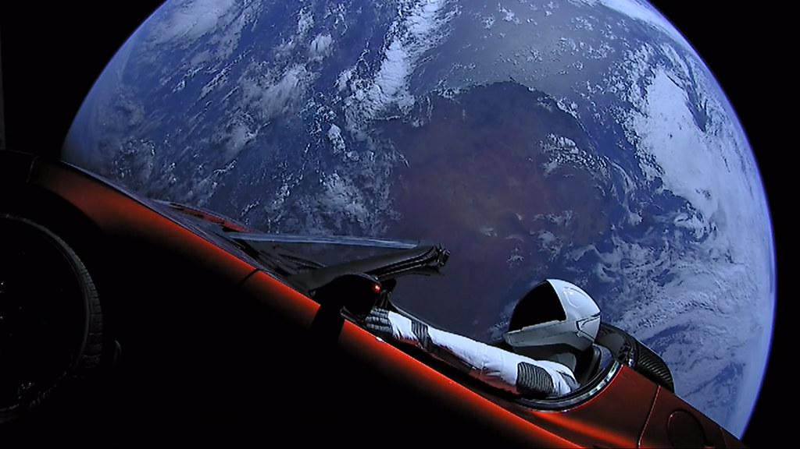
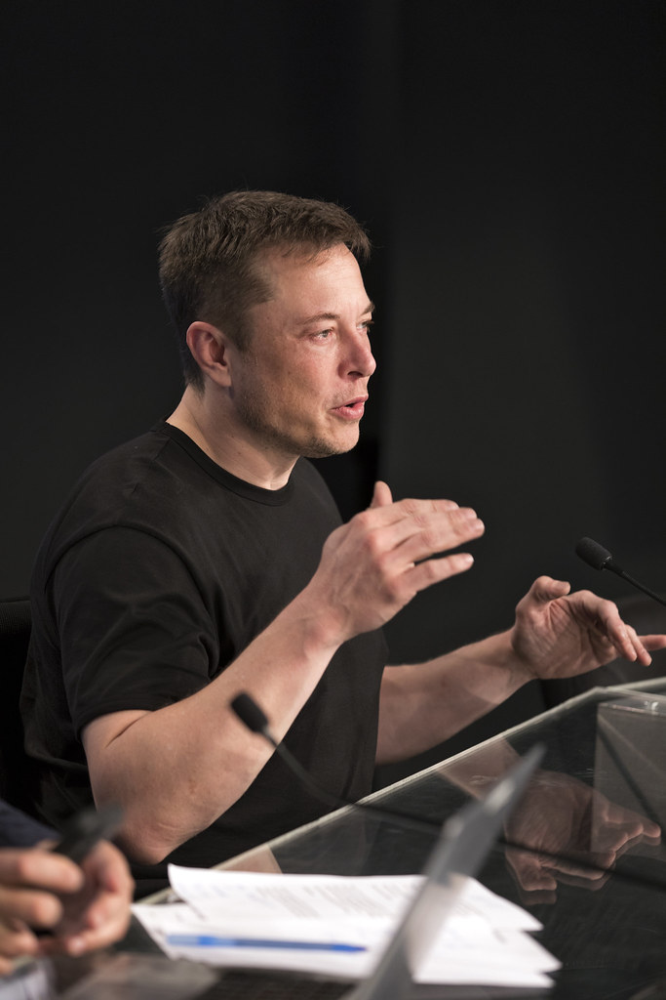

Storia SpaceX · Quindicesima parte · 6 febbraio 2018
Falcon Heavy: SpaceX diventa una potenza
Il 2017 aveva portato il riutilizzo e un ritmo nuovo. Ora arriva il lanciatore operativo più potente del mondo: ventisette motori, due razzi che tornano quasi insieme e un debutto che cambia il peso di SpaceX nel settore.
Indice Storia SpaceXNon più soltanto quelli che fanno tornare i razzi
Ci sono risultati che aggiungono una capacità e risultati che cambiano anche il modo in cui un'azienda viene considerata. Il primo volo di Falcon Heavy appartiene a entrambe le categorie. SpaceX ha già raggiunto l'orbita, rifornito la Stazione Spaziale Internazionale, superato due crisi durissime e rimesso in servizio primi stadi recuperati. Nel 2017 ha accelerato. Eppure il 6 febbraio 2018 mette davanti al mondo qualcosa che fino a quel momento non aveva: un lanciatore pesante che vola davvero.
Alla sua entrata in servizio, Falcon Heavy è il lanciatore operativo più potente al mondo. La precisazione temporale conta: non è il razzo più potente mai costruito, né cancella il Saturn V dalla storia. È il primo nella classe dei lanciatori allora disponibili, prima dell'arrivo di altri sistemi negli anni successivi. La NASA stessa riconosce questo primato nella ricostruzione del debutto. [1]
Il significato industriale è evidente. SpaceX non può più essere descritta soltanto come una società intraprendente che prova a fare le cose a modo suo. Accanto al Falcon 9 dispone adesso di un mezzo capace di affrontare un'altra classe di missioni. L'azienda del riuso entra nel trasporto pesante; alla frequenza aggiunge potenza. È in questo senso che diventa una potenza spaziale: non uno Stato, naturalmente, ma un soggetto industriale con il quale agenzie, clienti e concorrenti devono fare i conti.
Non occorre immaginare che tutti i rivali cambino idea nello stesso istante. Un settore non ha una sola voce. Basta guardare ciò che viene messo in volo: la promessa può essere criticata, il calendario può essere discusso, ma quel razzo non è più un disegno. E il suo debutto arriva dopo un anno di lavoro intenso, non al posto di quel lavoro.
Una promessa rimasta sulla carta troppo a lungo
Falcon Heavy era stato annunciato pubblicamente il 5 aprile 2011. Allora SpaceX prospettava l'arrivo del veicolo a Vandenberg entro la fine del 2012, seguito dal primo lancio; per la Florida indicava il 2013 o il 2014. Il volo effettivo avviene nel febbraio 2018. Fra la presentazione e il debutto trascorrono quasi sette anni, durante i quali cambiano tempi, configurazioni e priorità. [2]
Questa attesa pesa sulla credibilità del progetto. Annunciare un lanciatore molto potente è relativamente facile; portarlo sulla rampa è un altro mestiere. Ogni rinvio lascia spazio a una domanda legittima: arriverà davvero? Chi compra un lancio non può basare il proprio programma su un'immagine promozionale, per quanto convincente. Ha bisogno di un veicolo, di prestazioni e di un calendario.
Intanto la storia di SpaceX non si ferma. Falcon 9 cambia, il riuso passa dai tentativi ai primi successi, l'attività commerciale cresce. CRS-7 e AMOS-6 impongono indagini, modifiche e ripartenze già raccontate nei capitoli precedenti. Il Heavy deve trovare posto dentro questa storia, con tutte le sue urgenze. Il fatto che derivi dalla famiglia Falcon aiuta a comprenderlo, ma non lo rende automaticamente pronto.
Al momento del debutto, il tempo trascorso rende quindi il risultato più importante e meno semplice da celebrare come una facile intuizione. SpaceX arriva finalmente dove aveva promesso di arrivare, ma dopo avere scoperto quanto fosse difficile. La perseveranza non consiste nel rispettare una previsione sbagliata. Consiste nel trasformare un progetto molto più impegnativo del previsto in una macchina funzionante.

.jpg){kind=link}
Tre corpi, non tre Falcon 9 semplicemente legati insieme
Visto da lontano, il principio sembra quasi ovvio: un corpo centrale e due laterali, ciascuno con nove motori Merlin. Ventisette motori al decollo. Ma l'apparente familiarità delle parti nasconde il lavoro necessario a farne un veicolo unico. Un razzo non è una somma di serbatoi e motori; è una struttura nella quale forze, vibrazioni e comandi devono restare compatibili durante tutto il volo.
Musk lo aveva ammesso apertamente alla conferenza ISS R&D del luglio 2017. Il programma si era rivelato molto più difficile del previsto: cambiavano i carichi e le condizioni aerodinamiche, occorreva riprogettare la struttura del corpo centrale e gestire la separazione dei laterali. La parentela con Falcon 9 non aveva eliminato questi problemi. Prima del debutto, lo stesso Musk avvertiva anche del rischio che il veicolo non raggiungesse l'orbita. [3]
La separazione, in particolare, non è un dettaglio da lasciare alla fine. I corpi laterali devono staccarsi senza urtare il resto del lanciatore; il centrale continua la propria corsa; sopra, il secondo stadio deve poter ricevere il carico nel punto giusto della traiettoria. Il successo richiede che ogni passaggio prepari quello successivo. La potenza del decollo è soltanto l'inizio della prova.
C'è poi un elemento che lega il Heavy al capitolo precedente. I due corpi laterali del volo inaugurale hanno già lavorato: uno ha lanciato Thaicom 8 nel maggio 2016, l'altro Dragon CRS-9 nel luglio dello stesso anno. Non sono due esemplari nuovi costruiti soltanto per una fotografia. Il programma pesante incorpora hardware già volato, adattato alla nuova configurazione. Il riutilizzo comincia così ad attraversare la famiglia dei lanciatori. [4]
Il 6 febbraio, dalla rampa di Apollo
Il lancio avviene dalla 39A del Kennedy Space Center, alle 15:45 della Florida: le 20:45 UTC, le 21:45 in Italia. La rampa era già tornata a lavorare con Falcon 9 nell'anno precedente; ora ospita il debutto del nuovo veicolo. L'accordo ventennale firmato da NASA e SpaceX nel 2014 ha dato a quell'impianto storico una nuova attività. [5]
Quando Falcon Heavy si solleva, la fiamma e la nube riempiono il campo delle telecamere. La diretta segue un razzo che deve ancora dimostrare quasi tutto come sistema completo. L'attesa non riguarda soltanto la prima accensione: bisogna superare la salita, la separazione, il lavoro dello stadio superiore. Poi, per chi guarda da terra, comincia l'altra parte dello spettacolo. [6]
La 39A rende la scena particolarmente forte. Non perché Falcon Heavy sia un nuovo Saturn V, ma perché un'azienda nata molto dopo Apollo sta usando uno dei luoghi simbolo dell'astronautica per mettere alla prova un proprio lanciatore pesante. La continuità del luogo e la differenza del metodo convivono: non si parte da una rampa improvvisata, e non si ripete semplicemente ciò che quella rampa aveva fatto prima.
Il primato va letto nella sua misura corretta. La capacità massima dichiarata verso l'orbita bassa è di circa 64 tonnellate, riferita alle condizioni di massima prestazione, non al piccolo carico dimostrativo di questo volo. Non è neppure una promessa di portare sempre quella massa recuperando tutti i corpi: tornare richiede propellente e comporta un compromesso con la prestazione. La missione inaugurale dimostra il funzionamento del sistema, non una consegna di 64 tonnellate. [8]
Il valore resta enorme. Un lanciatore pesante non serve soltanto a portare un oggetto più grande in orbita. Può offrire margine per destinazioni più impegnative o per traiettorie che chiedono più energia. Cambia il ventaglio delle missioni proponibili. Ed è proprio qui che SpaceX acquista un peso diverso: comincia a poter rispondere a richieste che il solo Falcon 9 non copre nello stesso modo.

.jpg){kind=link}
Due razzi tornano, quasi insieme
I corpi laterali si separano e tornano verso la costa. Circa otto minuti dopo il decollo, due primi stadi scendono verso LZ-1 e LZ-2. Si vedono i motori accesi, le gambe aperte, due discese che sembrano appartenere alla stessa coreografia. L'arrivo è quasi simultaneo, non perfettamente nello stesso istante. La diretta mostra entrambi i corpi fermarsi in piedi sulle rispettive piazzole. [6]
È un'immagine che basta a spiegare perché quel volo sia rimasto nella memoria. Il primo atterraggio del 2015 aveva fatto sentire possibile ciò che sembrava troppo difficile; quelli in mare avevano allargato la possibilità. Ora il ritorno si sdoppia. Si fa appena in tempo a seguire un razzo e accanto ne sta scendendo un altro. Il cielo e il terreno entrano nella stessa scena, e il finale non è un'esplosione lontana: sono due macchine intere.
Per chi ha seguito gli anni precedenti, l'emozione contiene anche quei tentativi. Le discese finite male sulle piattaforme, le immagini interrotte, il razzo che arrivava ma non restava in piedi. Erano prove di un recupero ancora da imparare. Qui si riconosce il frutto di quel lavoro, esteso a una missione più complessa. Il doppio ritorno non cancella le difficoltà; mostra fin dove abbia portato l'insistenza nel risolverle.
Ed è difficile separare completamente la bellezza della scena dalla sua sostanza. Il risultato è spettacolare proprio perché la macchina fa qualcosa di concreto: vola, si separa, torna, rallenta, si posa. Non si tratta di una rappresentazione aggiunta dopo. La fotografia più memorabile del debutto nasce dal funzionamento del veicolo.

.jpg){kind=link}
Il corpo centrale non torna
Il recupero completo, però, non riesce. Il corpo centrale è destinato alla piattaforma oceanica Of Course I Still Love You. Nella frenata finale, due dei motori previsti non si accendono; il rallentamento è insufficiente e lo stadio va perduto in mare. È il fallimento di una parte importante del piano di recupero. [1]
Questo limite appartiene alla storia del debutto tanto quanto le due piazzole occupate. La salita riuscita non equivale a tre recuperi riusciti. E il successo della missione non richiede di trasformare il corpo centrale perduto in un successo sotto altro nome. Il primo Heavy raggiunge l'orbita e prosegue la prova con lo stadio superiore; il rientro del centrale lascia invece un problema da correggere.
Lo spirito sperimentale consiste anche nel tenere insieme queste due cose. Il veicolo ha dimostrato capacità decisive e ha mancato un obiettivo. Si può essere entusiasti del volo senza smettere di chiedersi perché qualcosa non abbia funzionato. È un equilibrio che abbiamo già incontrato nei tentativi di atterraggio del Falcon 9: riconoscere il progresso non impedisce di riconoscere il guasto.
Una Roadster davanti alla Terra
Il carico dimostrativo è una Tesla Roadster di Musk, con il manichino Starman al posto di guida. La vettura rimane collegata al secondo stadio. Dopo la permanenza iniziale attorno alla Terra, una successiva accensione porta il complesso su un'orbita attorno al Sole, che si spinge oltre l'orbita di Marte. Non è una consegna su Marte, un incontro con il pianeta o una prova di trasporto umano. [1]
La scelta fa discutere anche perché occupa tanto spazio nel racconto pubblico. Un'automobile non è una sonda scientifica; un manichino non è un astronauta. Ma proprio questa stranezza rende l'immagine immediatamente comprensibile. C'è un oggetto familiare, con la Terra alle spalle, in un ambiente che non gli appartiene. Non occorre conoscere la meccanica orbitale per fermarsi a guardarlo.
Si può considerarla una trovata pubblicitaria e riconoscerne la forza senza confondere i due piani. Il razzo non ha successo perché trasporta una Tesla. La Tesla diventa una scena mondiale perché il razzo riesce a trasportarla. Sotto il messaggio c'è il lavoro di propulsione, strutture, controllo e operazioni. Togliendo l'automobile, rimarrebbe comunque il debutto di un lanciatore pesante.
Resta anche il richiamo a Marte, già presentato allo IAC del 2016. Il Heavy non è il grande sistema marziano illustrato allora, e non ne realizza il programma. Le due storie si toccano nell'aspirazione, non nell'identità del veicolo. Da una parte c'è un mezzo che comincia a volare; dall'altra un obiettivo molto più lontano, ancora da trasformare in un'architettura praticabile. Il sogno non sostituisce il lavoro, ma gli dà una direzione.

.jpg){kind=link}
Il debutto nella diretta originale
Diretta originale sul canale ufficiale SpaceX. Video incorporato, non scaricato o ripubblicato.
Il settore deve considerare una SpaceX diversa
Il riconoscimento non resta affidato alle immagini. Robert Lightfoot, allora amministratore facente funzioni della NASA, si congratula con SpaceX e richiama il lavoro necessario al primo volo di un nuovo veicolo. Bob Cabana, direttore del Kennedy Space Center, collega il risultato all'integrazione di una nuova classe di lanciatore nel programma spaziale nazionale. Sono reazioni istituzionali, pubblicate dalla NASA subito dopo il lancio. [5]
Non sono la dichiarazione che ogni alternativa sia diventata inutile. Sono qualcosa di più preciso e più significativo per la storia che stiamo seguendo: una nuova capacità privata viene riconosciuta dentro l'insieme delle capacità spaziali del Paese. SpaceX non è fuori dal sistema a fare dimostrazioni per conto proprio. Ha conquistato un posto dal quale può assumere responsabilità più grandi.
Nel giugno 2018 arriva anche un fatto commerciale concreto. L'Air Force assegna a SpaceX il servizio di lancio AFSPC-52, destinato a Falcon Heavy. Il contratto vale circa 130 milioni di dollari. È un incarico per una missione futura, non un volo già effettuato nel 2018, e non il primo contratto militare nella storia di SpaceX. Il punto è l'ingresso del nuovo lanciatore in quel lavoro. [7]
È qui che la parola «potenza» acquista il suo senso più solido. Non basta avere una spinta elevata per diventare un grande fornitore; occorrono fiducia, procedure, capacità di eseguire contratti e continuità. Il debutto non completa tutto questo, ma apre un'altra strada. L'azienda che nel capitolo di AMOS-6 doveva dimostrare di saper tornare a lavorare può ora concorrere anche con un mezzo pesante.
Per gli altri operatori il confronto cambia perché cambia l'offerta disponibile. Il riuso aveva messo in discussione il modo di impiegare un primo stadio. Il Heavy aggiunge la domanda su quali missioni SpaceX possa servire e con quali prestazioni. Non significa che tutti i concorrenti siano improvvisamente sconfitti: significa che non è più ragionevole descrivere l'azienda come una curiosità ai margini del settore.


La potenza, poi il lavoro
Il 6 febbraio non risolve ogni questione. Un volo dimostrativo non crea da solo un calendario di missioni, e la capacità massima non è l'unico criterio di scelta per un cliente. La destinazione, l'affidabilità, i tempi, l'integrazione del carico e le condizioni del servizio continuano a contare. Falcon Heavy deve ancora costruire la propria storia operativa.
Ma la scala è cambiata. Nel 2017 SpaceX aveva mostrato di poter crescere mentre introduceva il riutilizzo. All'inizio del 2018 mostra di poter estendere la propria famiglia verso il trasporto pesante. Le due cose si rafforzano: il lanciatore più grande non arriva da un'azienda priva di attività, ma da una società che ha già cominciato ad accelerare.
Quella sera restano nella memoria i due corpi laterali in piedi e Starman davanti alla Terra. Dietro le immagini resta un risultato meno facile da condensare in una fotografia: SpaceX ha aumentato la propria capacità di agire. Può proporre un altro mezzo, affrontare un'altra classe di missioni, essere valutata per un'altra classe di incarichi. Ha cambiato considerazione perché ha cambiato ciò che sa fare.
Il passo successivo non sarà soltanto cercare un razzo ancora più grande. Sarà rendere più maturo il lavoro che Falcon 9 deve ripetere, con il Block 5 e con un riuso sempre meno eccezionale. Il Heavy ha dato a SpaceX una nuova misura di potenza. La crescita degli anni successivi chiederà anche continuità, frequenza e una macchina industriale capace di sostenere quello slancio.
Fonti storiche e documenti
Il capitolo distingue fatti del debutto, prestazioni massime dichiarate e lettura editoriale del nuovo peso industriale. Le reazioni riportate sono documentate; non si attribuiscono giudizi privati ai concorrenti.
- [1] NASA, John Uri, Five Years Ago: First Flight of the Falcon Heavy Rocket, 6 febbraio 2023. Ricostruzione del debutto: primato operativo, perdita del centrale e orbita solare di Roadster e secondo stadio. Le previsioni della pagina non sono fatti del 2018.
- [2] SpaceX, annuncio del Falcon Heavy, 5 aprile 2011, ripubblicato dalla National Space Society. Documento contemporaneo con il calendario inizialmente prospettato. Specifiche e proposte del 2011 non sono confuse con la configurazione effettivamente volata nel 2018.
- [3] Elon Musk, intervento alla ISS R&D Conference, 19 luglio 2017, registrazione dell'incontro. Dichiarazioni sul lavoro strutturale, sulle difficoltà del progetto e sui rischi del primo volo; trascrizione di consultazione. Il video è una registrazione delle dichiarazioni primarie, non un filmato ufficiale SpaceX.
- [4] SpaceX, Falcon Heavy Demonstration Mission, press kit, febbraio 2018. Documento originale conservato in un archivio indipendente: configurazione, provenienza dei laterali da Thaicom 8 e CRS-9, obiettivi di recupero e natura sperimentale della missione. La sequenza temporale del dossier è un programma prevolo, non il consuntivo di tre atterraggi.
- [5] NASA, Bob Granath, Falcon Heavy a Multi-User Spaceport Success Story, 7 febbraio 2018. Ora effettiva del lancio, rapporto con la rampa 39A e reazioni di Robert Lightfoot e Bob Cabana. Il riconoscimento della nuova capacità non equivale all'abbandono dei programmi NASA.
- [6] SpaceX, Falcon Heavy Test Flight, diretta ufficiale del 6 febbraio 2018. Testimonianza audiovisiva del decollo, della separazione e del doppio atterraggio. La diretta documenta due recuperi, non tre.
- [7] Air Force, assegnazione del contratto AFSPC-52, annuncio del 21 giugno 2018; Aeronautics and Space Report of the President, anno fiscale 2018, sezione Air Force: contratto assegnato il 20 giugno e servizio previsto con Falcon Heavy. La data del contratto è distinta da quella del futuro lancio.
- [8] SpaceX, scheda tecnica Falcon Heavy, capacità massima pubblicata di 63.800 kg verso l'orbita bassa; il valore nominale è richiamato anche nella ricostruzione NASA del debutto. La scheda tecnica odierna è usata per il valore dichiarato, non per attribuire al 2018 prestazioni di missioni successive.
Fotografie e riutilizzo
Cinque fotografie autentiche: quattro SpaceX con dedica CC0 e una NASA di Kim Shiflett, impiegata a fini informativi. Nessuna immagine generata. Il registro delle fotografie conserva provenienza, date e condizioni. Il sito non dichiara approvazioni da parte di SpaceX o NASA.
Consultare l’atlante tecnico
Caratteristiche, schemi, configurazioni e limiti: Falcon Heavy · Recupero dei booster Falcon.